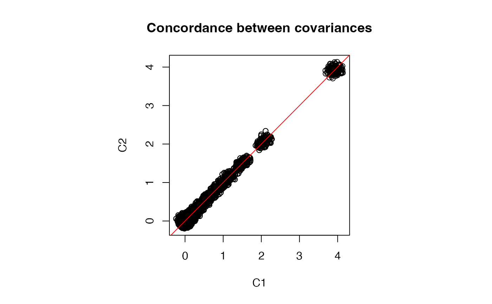

Given covariance between features in the original data, estimate the covariance matrix after applying a transformation to each feature. Here we use the eclairs decomposition of the original covariance matrix, perform a parametric bootstrap and return the eclairs decomposition of the covariance matrix of the transformed data.
Usage
cov_transform(
Sigma.eclairs,
f,
n.boot,
lambda = NULL,
compute = c("covariance", "correlation")
)Arguments
- Sigma.eclairs
covariance/correlation matrix as an eclairs object
- f
function specifying the transformation.
- n.boot
number of parametric bootstrap samples. Increasing n gives more precise estimates.
- lambda
shrinkage parameter. If not specified, it is estimated from the data.
- compute
compute the 'covariance' (default) or 'correlation'
Value
eclairs decomposition represented correlation/covariance on the transformed data
Examples
library(Rfast)
set.seed(1)
n = 800 # number of samples
p = 200 # number of features
# create correlation matrix
Sigma = autocorr.mat(p, .9)
# sample matrix from MVN with covariance Sigma
Y = rmvnorm(n, rep(0, p), sigma=Sigma)
# perform eclairs decomposition
ecl = eclairs(Y)
# Parametric boostrap to estimate covariance
# after transformation
# transformation function
f = function(x) log(x^2 + 1e-3)
# number of bootstrap samples
n_boot = 50000
# Evaluate eclairs decomposition on boostrap samples
ecl2 = cov_transform( ecl, f=f, n_boot, lambda = 1e-4)
# Get full covariance matrix from eclairs decomposition
C1 = getCov(ecl2)
# Parametric boostrap samples directly from full covariance matrix
X = rmvnorm(n_boot, rep(0, p), getCov(ecl))
# get covariance of transformed data
C2 = cov(f(X))
# Evaluate differences
# small differences are due to Monte Carlo error from boostrap sampling
range(C1-C2)
#> [1] -0.1033299 0.1043119
# Plot entries from two covariance estimates
par(pty="s")
plot(C1, C2, main="Concordance between covariances")
abline(0, 1, col='red')

# Save above but compute eclairs for correlation matrix
# Evaluate eclairs decomposition on boostrap samples
ecl2 = cov_transform( ecl, f=f, n_boot, compute="correlation", lambda = 1e-4)
# Get full covariance matrix from eclairs decomposition
C1 = getCor(ecl2)
# Parametric boostrap samples directly from full covariance matrix
X = rmvnorm(n_boot, rep(0, p), getCov(ecl))
# get correlation of transformed data
C2 = cor(f(X))
# Evaluate differences
# small differences are due to Monte Carlo error from boostrap sampling
range(C1-C2)
#> [1] -0.02374275 0.02722297
# Plot entries from two correlation estimates
par(pty="s")
plot(C1, C2, main="Correlation between covariances")
abline(0, 1, col='red')